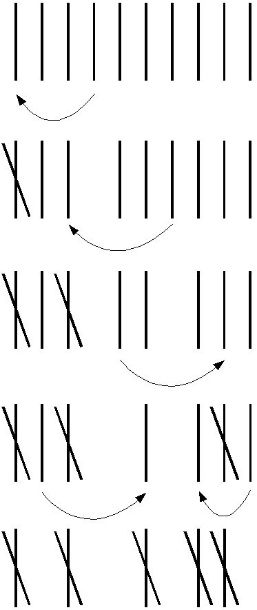
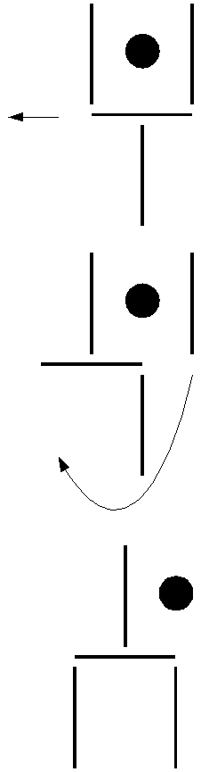

Soluções das Charadas
O Pai do Padre
...
Idade
...
Estrela de Cinco Pontas
Colocar uma próxima marcação no ponto de onde saíu a anterior.
Dez Palitos
A seqüência para a resposta segue abaixo:

Pá de Lixo
A seqüência para a resposta segue abaixo:

Voltar